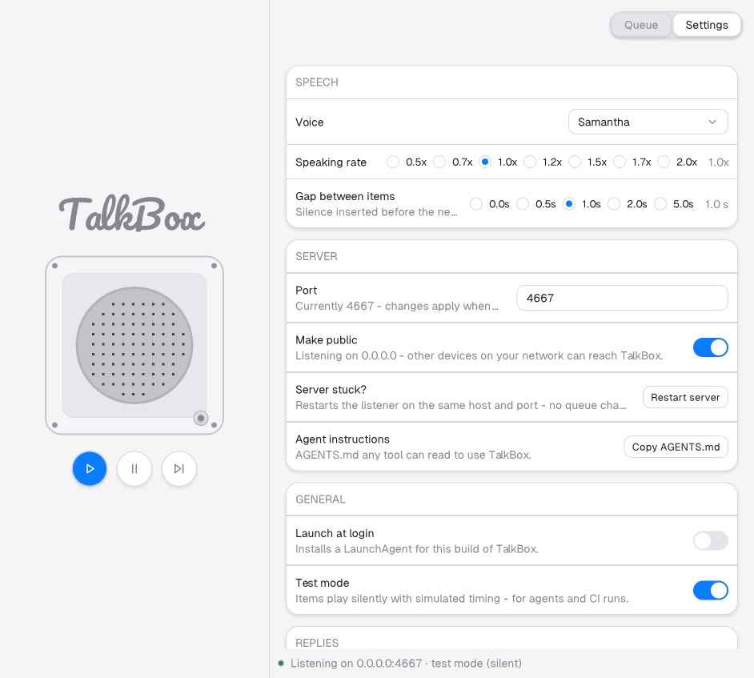

Reached via the Queue/Settings segmented control, ⌘,, or the tray's "View Settings" row — all three raise the window onto this same tab. This used to be a separate modeless window in the pre-v2 design; v2 folded it in, so there's no second window to manage, position, or close.

| SPEECH | Voice select (dropdown-menu: Samantha/Alex/Daniel/Karen/Moira), Speaking rate (radio row, 0.5–2.0×), Gap between items (radio row, 0–5s). Presets, not sliders — this SDK's markup sliders need an Options.sync mirror this app doesn't use. |
|---|---|
| SERVER | Port field + Make-public switch (both edit DRAFTS; a "Save and restart" row appears only once a draft differs from the live listener) — Restart server (new: forces the same stop+rebind with NO settings change, for a listener wedged by e.g. a Mac sleep/wake cycle) — Copy AGENTS.md. |
| GENERAL | Appearance (radio row: System/Light/Dark — System follows the macOS appearance live; Light/Dark pin the scheme), Launch at login (writes/removes a LaunchAgent plist), Test mode (silent simulated timing, for agents/CI). |
| REPLIES | Voice replies (off by default — no mic/speech-recognition permission prompt for anyone who never turns it on). |
| Footer row | Speaker sidecar health text + a "Restart speaker" ghost button. |
Everything applies immediately through the shared model (and mirrors POST /settings within ~100ms) — no OK/Apply row, except the one deliberate exception below. |
| Port/Make-public are the one exception: they edit drafts, because a live rebind briefly drops the listener and shouldn't fire on every keystroke. Every other switch/radio in this view is instant. |
Cards are bordered panels with padded, all-caps section headers — padding on a bare <text> is ignored in this SDK, so each header is wrapped in a <row>. |